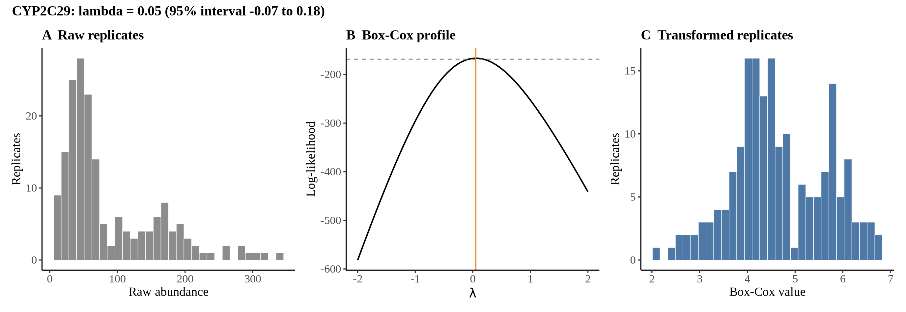
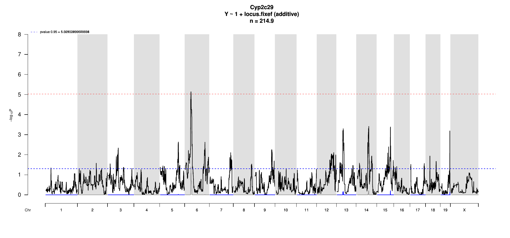
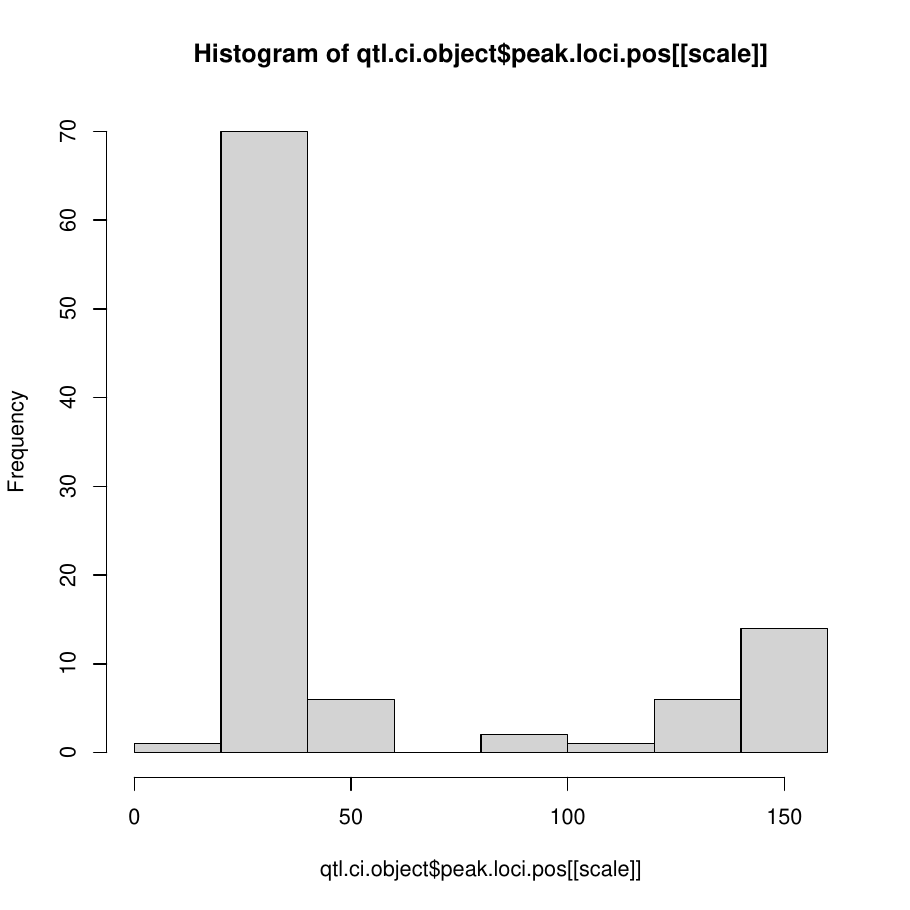
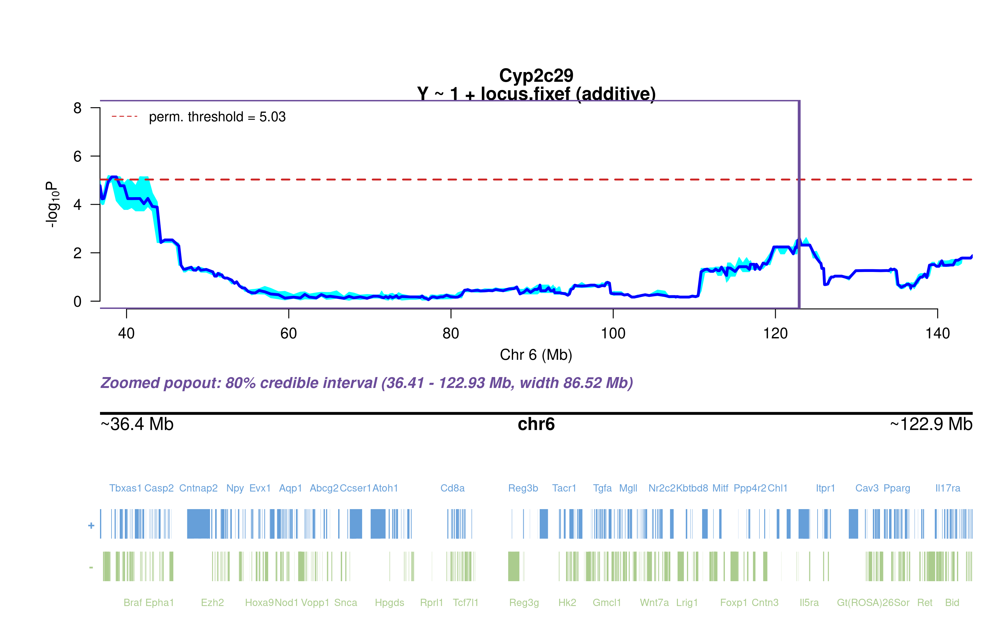
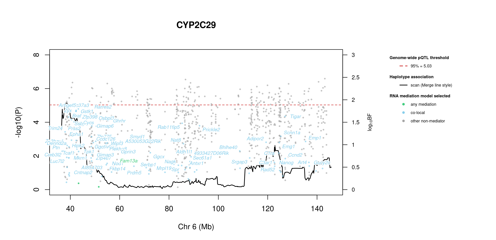
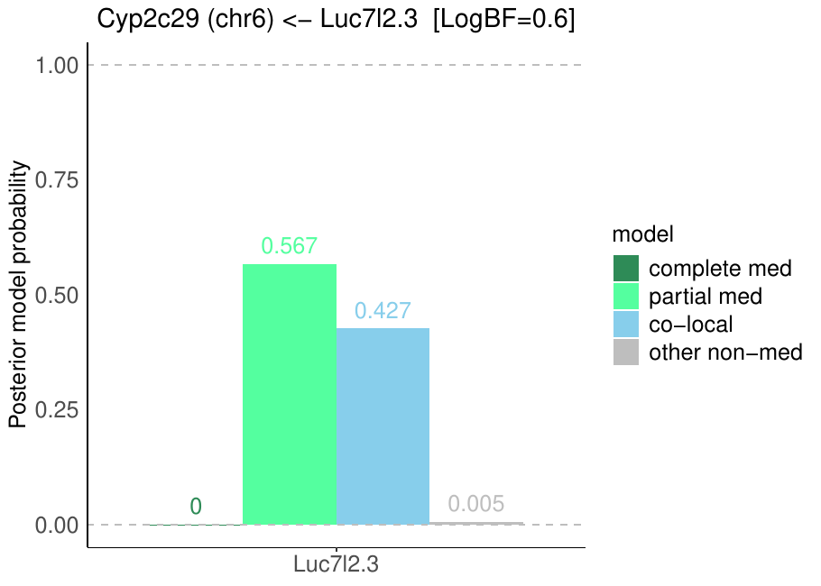

7 Cyp2c29
8 Protein Overview
The mouse protein Cyp2c29, encoded by the gene Cyp2c29, is a member of the cytochrome P450 superfamily of enzymes involved in the metabolism of various substrates, including drugs and fatty acids. Its aliases include CYP2C29, Cyp2c, and Cyp2c29a1. This protein plays a significant role in the oxidative metabolism of xenobiotics and endogenous compounds.
9 Data and normalization
Replicate measurements were Box-Cox transformed with a protein-specific λ = 0.05 (95% likelihood interval -0.07 to 0.18), estimated on the individual replicates (boxcox(y ~ strain), no +1 shift). The strain phenotype is the mean of the transformed replicates and the strain noise used for the wisam weights is their variance.


9.1 Heritability
Broad-sense heritability of the protein is 0.93 (95% CI 0.88–0.95; BH-adjusted P 5.69e-65). Its paired transcript is Cyp2c29 (array probe 1417651_PM_at, paired from the measured peptide NISQSFTNFSK). Transcript H² is 0.33 (95% CI 0.16–0.47; BH-adjusted P 1.47e-05).
10 pQTL genome scan
Genome scan of the Box-Cox phenotype with wisam weights (miqtl scan.h2lmm, 11 imputations); significance thresholds come from 1000 permutations (GEV fit to the permutation maxima of −log10 P). Strongest locus: chr6:38.19 Mb, P = 7.28e-06, adjusted P = 4.02e-02; 95% threshold = 5.03 (−log10 P).

11 Significant peak(s)
11.1 Chromosome 6 peak (UNC10908306)
| Peak position | −log10(P) | Adjusted P | 90% credible interval | Encoding gene | Gene location | pQTL type |
|---|---|---|---|---|---|---|
| chr6:38.19 Mb | 5.14 | 4.02e-02 | 36.73–144.32 Mb | Cyp2c29 | chr19:39.27–39.33 Mb | trans |
A pQTL is cis when the gene encoding the protein lies within the credible interval and trans otherwise.

Download: PDF

Download: PNG

11.1.1 Merge / diplotype fine-mapping

Download: PNG
The top allelic series (SDP) from Merge is added to the book once the follow-up summary has been generated.
11.1.2 TIMBR allelic series

Download: JPG

Download: JPG
The highest-posterior TIMBR allelic series at the peak splits the founders into allele 1: C57BL/6J, NOD/ShiLtJ, NZO/HlLtJ, CAST/EiJ, PWK/PhJ, WSB/EiJ; allele 0: A/J, 129S1/SvImJ. That is 2 functional alleles: founders in the same group are inferred to carry the same functional allele at this locus.
Number of functional alleles. At the lead locus (UNC10908306, 38.19 Mb) the posterior probability of a bi-allelic series (two functional alleles) is 0.25, tri-allelic 0.37, and four or more alleles 0.37; a single allele (no QTL effect) has probability 0.01. For comparison, the Chinese-restaurant-process prior gives 0.50 / 0.29 / 0.14 for one / two / three alleles, so the data move weight away from a single allele. The locus in the credible interval whose single best allelic series has the highest posterior probability is UNC11417253 (77.21 Mb; series 0,0,0,0,0,0,0,0, P = 0.81); there bi-allelic = 0.14, tri-allelic = 0.04, four or more = 0.02.


11.1.3 RNA mediation



491 candidate transcripts lie in the credible interval. 42 have a best-model log10 Bayes factor ≥ 0.5 with mediation or co-local as the best-supported model and are labelled in the figure (423 more reach 0.5 only for the non-mediator model and are not labelled): co-local (42): Arhgef5 (1.80), Slc37a3 (1.80), Zyx (1.77), Zfp398 (1.76), Rarres2 (1.76), Gstk1 (1.74), Braf (1.73), Osbpl3 (1.68), Ghrhr (1.54), Prss2 (1.51), Rab11fip5 (1.48), Prickle2 (1.42) …. Mediation means the transcript is best explained as lying on the path from the QTL to the protein; co-local means it shares the QTL without mediating; log10 BF is the evidence for the best-supported model against the null.
Function text is the UniProt (mouse) annotation retrieved on 2026-10-03; reviewed Swiss-Prot entries where available. A dash means UniProt holds no functional annotation for that symbol.
| Transcript | Best model | log10 BF | UniProt protein | Function (UniProt) |
|---|---|---|---|---|
| Arhgef5 | co-local | 1.80 | Rho guanine nucleotide exchange factor 5 | Guanine nucleotide exchange factor which activates Rho GTPases. Strongly activates RHOA. Also strongly activates RHOB, weakly activates RHOC and RHOG and shows no effect on RHOD, RHOV, RHOQ or RAC1. Involved in regulation of cell shape and actin cytoskeletal organization. |
| Slc37a3 | co-local | 1.80 | Sugar phosphate exchanger 3 | Unlike the other SLC37 members, lacks glucose-6-phosphate antiporter activity. In osteoclasts, forms a transporter complex with ATRAID for nitrogen-containing-bisphosphonates (N-BPs) required for releasing N-BP molecules that have trafficked to lysosomes through fluid-phase endocytosis into the cytosol |
| Zyx | co-local | 1.77 | Zyxin | Adhesion plaque protein. Binds alpha-actinin and the CRP protein. Important for targeting TES and ENA/VASP family members to focal adhesions and for the formation of actin-rich structures. May be a component of a signal transduction pathway that mediates adhesion-stimulated changes in gene expression |
| Zfp398 | co-local | 1.76 | — | — |
| Rarres2 | co-local | 1.76 | Retinoic acid receptor responder protein 2 | Adipocyte-secreted protein (adipokine) that regulates adipogenesis, metabolism and inflammation through activation of the chemokine-like receptor 1 (CMKLR1). Also acts as a ligand for CMKLR2. Can also bind to C-C chemokine receptor-like 2 (CCRL2), but with a lower affinity than it does to CMKLR1 or CMKLR2. |
| Gstk1 | co-local | 1.74 | — | — |
| Braf | co-local | 1.73 | Serine/threonine-protein kinase B-raf | Involved in the transduction of mitogenic signals from the cell membrane to the nucleus. Phosphorylates MAP2K1, and thereby activates the MAP kinase signal transduction pathway. Phosphorylates PFKFB2. May play a role in the postsynaptic responses of hippocampal neurons |
| Osbpl3 | co-local | 1.68 | Oxysterol-binding protein-related protein 3 | Lipid transfer protein that mediates the non-vesicular transport of phosphoinositide 4-phosphate (1,2-diacyl-sn-glycero-3-phospho-(1D-myo-inositol 4-phosphate), or PI(4)P) at the plasma membrane (PM)/ endoplasmic reticulum (ER) contact sites. Extracts PI4P from the PM, in exchange for phosphatidylcholine. |
| Ghrhr | co-local | 1.54 | Growth hormone-releasing hormone receptor | Receptor for GRF, coupled to G proteins which activate adenylyl cyclase. Stimulates somatotroph cell growth, growth hormone gene transcription and growth hormone secretion |
| Prss2 | co-local | 1.51 | Anionic trypsin-2 | — |
| Rab11fip5 | co-local | 1.48 | Rab11 family-interacting protein 5 | Rab effector involved in protein trafficking from apical recycling endosomes to the apical plasma membrane. Involved in insulin granule exocytosis. May regulate V-ATPase intracellular transport in response to extracellular acidosis |
| Prickle2 | co-local | 1.42 | Prickle-like protein 2 | Is involved in the organization and maintenance of axon initial segment (AIS) cytoskeletal architecture, likely cooperating with IGSF9B to regulate ANK3/ANKG localization to AIS. By binding to and regulating ANK3/ANKG, it modulates its ability to bundle microtubules, a crucial mechanism for establishing neuronal polarity and AIS formation. |
| Gimap6 | co-local | 1.42 | GTPase, IMAP family member 6 | — |
| Cycs | co-local | 1.41 | Cytochrome c, somatic | Electron carrier protein. The oxidized form of the cytochrome c heme group can accept an electron from the heme group of the cytochrome c1 subunit of cytochrome reductase. Cytochrome c then transfers this electron to the cytochrome oxidase complex, the final protein carrier in the mitochondrial electron-transport chain |
| Trim24 | co-local | 1.29 | Transcription intermediary factor 1-alpha | Transcriptional coactivator that interacts with numerous nuclear receptors and coactivators and modulates the transcription of target genes. Interacts with chromatin depending on histone H3 modifications, having the highest affinity for histone H3 that is both unmodified at ‘Lys-4’ (H3K4me0) and acetylated at ‘Lys-23’ (H3K23ac). Has E3 protein-ubiquitin ligase activity. |
| Scnn1a | co-local | 1.19 | Epithelial sodium channel subunit alpha | This is one of the three pore-forming subunits of the heterotrimeric epithelial sodium channel (ENaC), a critical regulator of sodium balance and fluid homeostasis. ENaC operates in epithelial tissues, where it mediates the electrodiffusion of sodium ions from extracellular fluid through the apical membrane of cells, with water following osmotically. |
| Zfp775 | co-local | 1.18 | Zinc finger protein 775 | May be involved in transcriptional regulation |
| Epha1 | co-local | 1.10 | Ephrin type-A receptor 1 | Receptor tyrosine kinase which binds promiscuously membrane-bound ephrin-A family ligands residing on adjacent cells, leading to contact-dependent bidirectional signaling into neighboring cells. The signaling pathway downstream of the receptor is referred to as forward signaling while the signaling pathway downstream of the ephrin ligand is referred to as reverse signaling. |
| A530053G22Rik | co-local | 1.08 | Uncharacterized protein | — |
| Adipor2 | co-local | 1.05 | Adiponectin receptor protein 2 | Receptor for ADIPOQ, an essential hormone secreted by adipocytes that regulates glucose and lipid metabolism. Required for normal body fat and glucose homeostasis. ADIPOQ-binding activates a signaling cascade that leads to increased PPARA activity, and ultimately to increased fatty acid oxidation and glucose uptake. |
| Emg1 | co-local | 1.05 | Ribosomal RNA small subunit methyltransferase NEP1 | S-adenosyl-L-methionine-dependent pseudouridine N(1)-methyltransferase that methylates pseudouridine at position in 18S rRNA. Involved the biosynthesis of the hypermodified N1-methyl-N3-(3-amino-3-carboxypropyl) pseudouridine (m1acp3-Psi) conserved in eukaryotic 18S rRNA. Is not able to methylate uridine at this position. |
| Ccdc126 | co-local | 1.05 | Coiled-coil domain-containing protein 126 | — |
| Wipf3 | co-local | 1.03 | WAS/WASL-interacting protein family member 3 | May be a regulator of cytoskeletal organization (Potential). May have a role in spermatogenesis |
| Nat8 | co-local | 1.02 | N-acetyltransferase 8 | Endoplasmic reticulum (ER)-membrane-bound lysine N-acetyltransferase catalyzing the N6-acetylation of lysine residues in the lumen of the ER in various proteins, including PROM1 and BACE1, using acetyl-CoA as acetyl donor. Thereby, may regulate apoptosis through the acetylation and the regulation of the expression of PROM1. |
| Atp6v0e2 | co-local | 0.96 | V-type proton ATPase subunit e 2 | Subunit of the V0 complex of vacuolar(H+)-ATPase (V-ATPase), a multisubunit enzyme composed of a peripheral complex (V1) that hydrolyzes ATP and a membrane integral complex (V0) that translocates protons. |
| Dennd2a | co-local | 0.95 | DENN domain-containing protein 2A | Guanine nucleotide exchange factor (GEF) which may activate RAB9A and RAB9B. Promotes the exchange of GDP to GTP, converting inactive GDP-bound Rab proteins into their active GTP-bound form. May play a role in late endosomes back to trans-Golgi network/TGN transport |
| Gprin3 | co-local | 0.93 | — | — |
| Bhlhe40 | co-local | 0.86 | Class E basic helix-loop-helix protein 40 | Transcriptional repressor involved in the regulation of the circadian rhythm by negatively regulating the activity of the clock genes and clock-controlled genes. Acts as the negative limb of a novel autoregulatory feedback loop (DEC loop) which differs from the one formed by the PER and CRY transcriptional repressors (PER/CRY loop). |
| Tpk1 | co-local | 0.85 | Thiamine pyrophosphokinase 1 | Catalyzes the phosphorylation of thiamine to thiamine pyrophosphate (TPP) utilizing UTP and therefore links the biosynthesis of TPP to pyrimidines metabolism. By producing thiamine pyrophosphate, a cofactor of the mitochondrial pyruvate dehydrogenase indirectly regulates pyruvate oxidation and lipogenesis. |
| Ggcx | co-local | 0.82 | Vitamin K-dependent gamma-carboxylase | — |
| C1ra | co-local | 0.81 | Complement C1r-A subcomponent | Serine protease component of the complement C1 complex, a multiprotein complex that initiates the classical pathway of the complement system, a cascade of proteins that leads to phagocytosis and breakdown of pathogens and signaling that strengthens the adaptive immune system. |
| Gimap3 | co-local | 0.78 | — | — |
| 4933427D06Rik | co-local | 0.73 | Uncharacterized protein | — |
| Srgap3 | co-local | 0.71 | SLIT-ROBO Rho GTPase-activating protein 3 | GTPase-activating protein for RAC1 and perhaps CDC42, but not for RhoA small GTPase. May attenuate RAC1 signaling in neurons |
| Gucy2c | co-local | 0.61 | — | — |
| Nanog | co-local | 0.60 | Homeobox protein NANOG | Transcription regulator involved in inner cell mass and embryonic stem (ES) cells proliferation and self-renewal. Imposes pluripotency on ES cells and prevents their differentiation towards extraembryonic endoderm and trophectoderm lineages. |
| Nod1 | co-local | 0.58 | Nucleotide-binding oligomerization domain-containing protein 1 | Pattern recognition receptor (PRR) that detects bacterial peptidoglycan fragments and other danger signals and thus participates in both innate and adaptive immune responses. Specifically recognizes and binds gamma-D-glutamyl-meso-diaminopimelic acid (iE-DAP), a dipeptide present in peptidoglycan of Gram-negative bacteria. |
| Fkbp14 | co-local | 0.55 | Peptidyl-prolyl cis-trans isomerase FKBP14 | PPIase which accelerates the folding of proteins during protein synthesis. Has a preference for substrates containing 4-hydroxylproline modifications, including type III collagen. May also target type VI and type X collagens |
| Nagk | co-local | 0.54 | N-acetyl-D-glucosamine kinase | Converts endogenous N-acetylglucosamine (GlcNAc), a major component of complex carbohydrates, from lysosomal degradation or nutritional sources into GlcNAc 6-phosphate. Also has N-acetylmannosamine (ManNAc) kinase activity. Involved in the N-glycolylneuraminic acid (Neu5Gc) degradation pathway. |
| Spr | co-local | 0.54 | Sepiapterin reductase | Catalyzes the final one or two reductions in tetra-hydrobiopterin biosynthesis to form 5,6,7,8-tetrahydrobiopterin |
| Art4 | co-local | 0.53 | Ecto-ADP-ribosyltransferase 4 | — |
| Prdm5 | co-local | 0.52 | PR domain zinc finger protein 5 | Sequence-specific DNA-binding transcription factor. Represses transcription at least in part by recruitment of the histone methyltransferase EHMT2/G9A and histone deacetylases such as HDAC1. Regulates hematopoiesis-associated protein-coding and microRNA (miRNA) genes. |

Download: PDF